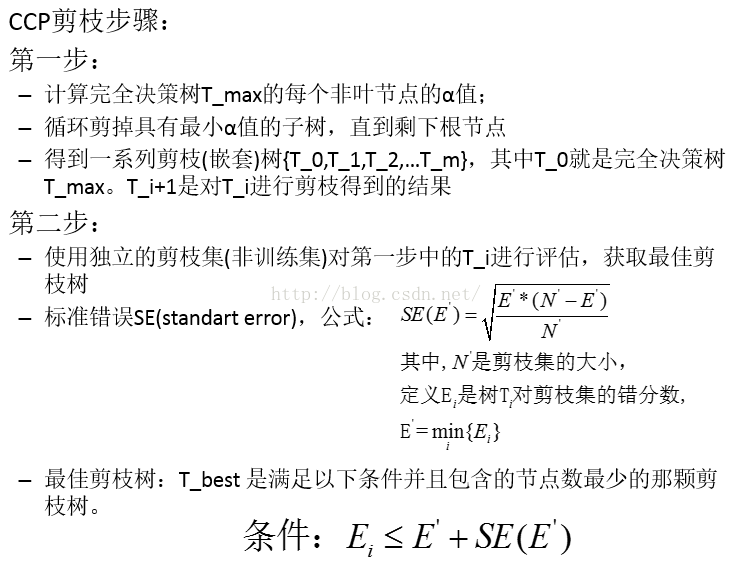

决策树（Decision Tree）
- 决策树学习是采用自顶向下的递归方法
- 基本思想是以信息熵为度量构造一棵熵值下降最快的树，到叶子节点处的熵值为零
- 此时每个叶节点中的实例都属于同一类
- 有监督学习
树建立的关键：即在当前状态下选择哪个属性作为分类依据。根据不同的目标函数：
- ID3
- C4.5
- Cart
ID3
信息增益：特征A对训练数据集D的信息增益g(D,A)， 定义为集合D的经验熵H(D)与特征A给定条件下D的经验条件熵H(D|A)之差，即： g(D,A)=H(D) – H(D|A)
显然，这即为训练数据集D和特征A的互信息
遍历所有特征：选择信息增益最大的特征作为当前的分裂特征
其他目标
信息增益率：gr(D,A) = g(D,A) / H(A) C4.5
Gini系数： CART
决策树的过拟合
决策树对训练属于有很好的分类能力，但对未知的测试数据未必有好的分类能力，泛化能力弱，即可能发生过拟合现象。
- 剪枝
- 随机森林
随机森林
在bagging基础上做修改：
- 从样本集中用Bootstrap采样选出n个样本；
- 从所有属性中随机选择k个属性，选择最佳分割属性作为节点建立CART决策树；（第二个随机）
- 重复以上两步m次，即建立了m棵CART决策树
- 这m个CART形成随机森林，通过投票表决结果，决定数据属于哪一类
随机森林对样本有权重，但对分类器没有权重。
预测效果好，构造简单，泛化能力强，但模型移植能力差
cart分类
————决策树分类方法
它采用一种二分递归分割的技术，分割方法采用基于最小距离的基尼指数估计函数，将当前的样本集分为两个子样本集，使得生成的的每个非叶子节点都有两个分支。因此，CART算法生成的决策树是结构简洁的二叉树。
- 分类树
如果目标变量是离散变量，则是classfication Tree 。分类树是使用树结构算法将数据分成离散类的方法。
- 回归树
如果目标是连续变量，则是Regression Tree。 CART树是二叉树，不像多叉树那样形成过多的数据碎片。
分类树两个关键点
（1）将训练样本进行递归地划分自变量空间进行建树
（2）用验证数据进行剪枝。
a.对于离散变量X（x1…xn）
分别取X变量各值的不同组合，将其分到树的左枝或右枝，并对不同组合而产生的树，进行评判，找出最佳组合。如果只有两个取值，好办，直接根据这两个值就可以划分树。取值多于两个的情况就复杂一些了，如变量年纪，其值有“少年”、“中年”、“老年”，则分别生产{少年，中年}和{老年}，{上年、老年}和{中年}，{中年，老年}和{少年}，这三种组合，最后评判对目标区分最佳的组合。因为CART二分的特性，当训练数据具有两个以上的类别，CART需考虑将目标类别合并成两个超类别，这个过程称为双化。这里可以说一个公式,n个属性，可以分出(2^n-2)/2种情况。
b.对于连续变量X（x1…xn）
首先将值排序，分别取其两相邻值的平均值点作为分隔点，将树一分成左枝和右枝，不断扫描，进而判断最佳分割点。特征值大于分裂值就走左子树，或者就走右子树。
这里有一个问题，这次选中的分裂属性在下次还可以被选择吗？对于离散变量XD，如果XD只有两种取值，那么在这一次分裂中，根据XD分裂后，左子树中的subDataset中每个数据的XD属性一样，右子树中的subDataset中每个数据的XD属性也一样，所以在这个节点以后，XD都不起作用了，就不用考虑XD了。XD取3种，4种。。。的情况大家自己想想，不难想明白。至于连续变量XC，离散化后相当于一个可以取n个值的离散变量，按刚刚离散变量的情况分析。除非XC的取值都一样，否则这次用了XC作为分裂属性，下次还要考虑XC。
变量和最佳切分点选择原则
树的生长，总的原则是，
让枝比树更纯，而度量原则是根据不纯对指标来衡量，对于分类树，则用GINI指标、Twoing指标、Order Twoing等；如果是回归树则用，最小平方残差、最小绝对残差等指标衡量
整个树的生长是一个递归过程，直到终止条件
终止条件
（1）节点是纯结点，即所有的记录的目标变量值相同
（2）树的深度达到了预先指定的最大值
（3）混杂度的最大下降值小于一个预先指定的值
（4）节点的记录量小于预先指定的最小节点记录量
（5）一个节点中的所有记录其预测变量值相同
直观的情况，当节点包含的数据记录都属于同一个类别时就可以终止分裂了。这只是一个特例，更一般的情况我们计算χ2值来判断分类条件和类别的相关程度，当χ2很小时说明分类条件和类别是独立的，即按照该分类条件进行分类是没有道理的，此时节点停止分裂。注意这里的“分类条件”是指按照GINI_Gain最小原则得到的“分类条件”。
终止条件（3）混杂度的最大下降值小于一个预先指定的值，该枝的分化即停止。所有枝节的分化都停止后，树形模型即成。其实你也可以不使用这个终止条件，让树生长到最大，因为CART有剪枝算法。
剪枝
树生长完之后就是剪枝，剪枝非常重要
剪枝目的是避免决策树过拟合(Overfitting)样本。在一般的数据集中，过拟合的决策树的错误率比经过简化的决策树的错误率要高。
- PrePrune：预剪枝，及早的停止数增长。
- 后剪枝，在已生成过拟合决策树上进行剪枝，可以得到简化版的剪枝决策树。
剪枝的准则：如何确定决策树的规模
1：使用训练集合(Training Set）和验证集合(Validation Set)，来评估剪枝方法在修剪结点上的效用
2：使用所有的训练集合进行训练，但是用统计测试来估计修剪特定结点是否会改善训练集合外的数据的评估性能，如使用Chi-Square（Quinlan，1986）测试来进一步扩展结点是否能改善整个分类数据的性能，还是仅
仅改善了当前训练集合数据上的性能。
3：使用明确的标准来衡量训练样例和决策树的复杂度，当编码长度最小时，停止树增长，如MDL(Minimum Description Length)准则。
Reduced-Error Pruning(REP,错误率降低剪枝）
1：删除以此结点为根的子树
2：使其成为叶子结点
3：赋予该结点关联的训练数据的最常见分类
4：当修剪后的树对于验证集合的性能不会比原来的树差时，才真正删除该结点
Pessimistic Error Pruning(PEP，悲观剪枝）
先计算规则在它应用的训练样例上的精度，然后假定此估计精度为二项式分布，并计算它的标准差。对于给定的置信区间，采用下界估计作为规则性能的度量。这样做的结果，是对于大的数据集合，该剪枝策略能够非常接近观察精度，随着数据集合的减小，离观察精度越来越远。该剪枝方法尽管不是统计有效的，但是在实践中有效。
PEP为了提高对测试集合的预测可靠性，PEP对误差估计增加了连续性校正(Continuity Correction)。
Cost-Complexity Pruning(CCP、代价复杂度)

终结果
（1）分类树：最终叶子中概率最大的类
（2）回归树：最终叶子的均值或者中位数
优点
1）非常灵活，可以允许有部分错分成本，还可指定先验概率分布，可使用自动的成本复杂性剪枝来得到归纳性更强的树。
2）在面对诸如存在缺失值、变量数多等问题时CART显得非常稳健。
AdaBoost元算法提高分类性能

bagging
基于数据随机重抽样的分类器构建方法


投票机制
训练过程
该算法其实是一个简单的弱分类算法提升过程，这个过程通过不断的训练，可以提高对数据的分类能力。整个过程如下所示：
1. 先通过对N个训练样本的学习得到第一个弱分类器 ；
2. 将 分错的样本和其他的新数据一起构成一个新的N个的训练样本，通过对这个样本的学习得到第二个弱分类器 ；
3. 将 和 都分错了的样本加上其他的新样本构成另一个新的N个的训练样本，通过对这个样本的学习得到第三个弱分类器 ；
4. 最终经过提升的强分类器 。即某个数据被分为哪一类要通过 ， ……的多数表决。
对于boosting算法，存在两个问题：
1. 如何调整训练集，使得在训练集上训练的弱分类器得以进行；
2. 如何将训练得到的各个弱分类器联合起来形成强分类器。
针对以上两个问题，adaboost算法进行了调整：
1. 使用加权后选取的训练数据代替随机选取的训练样本，这样将训练的焦点集中在比较难分的训练数据样本上；
2. 将弱分类器联合起来，使用加权的投票机制代替平均投票机制。让分类效果好的弱分类器具有较大的权重，而分类效果差的分类器具有较小的权重。
理解：
弱分类器：一个简单的映射，从X映射到Y，一步完成xi的归类，将归类的结果与实际类别比较得到归类的对错
应用场景：
1）用于二分类或多分类的应用场景
2）用于做分类任务的baseline
无脑化，简单，不会overfitting，不用调分类器
3）用于特征选择（feature selection)
4）Boosting框架用于对badcase的修正
只需要增加新的分类器，不需要变动原有分类器